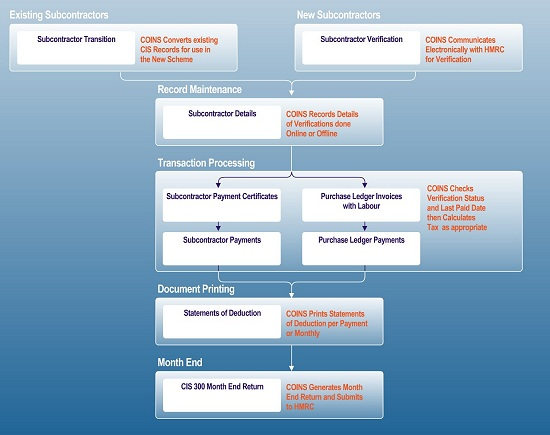
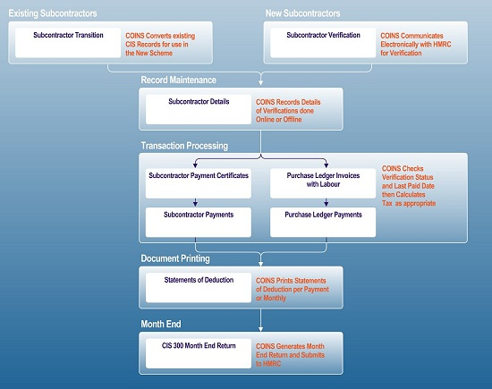

 View high-resolution PDF diagram
View high-resolution PDF diagram
For a summary of the scheme and for more details of configuring
These documents are available on the client area of the
Operating the CIS 2007 scheme involves three main processes:
Diagram
 View high-resolution PDF diagram